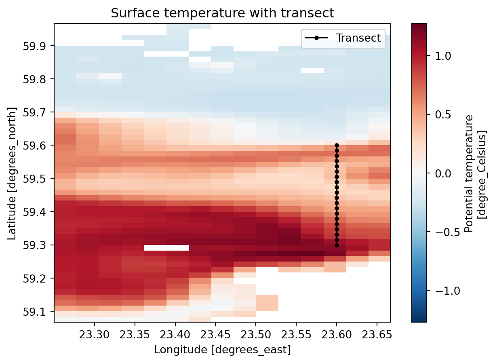
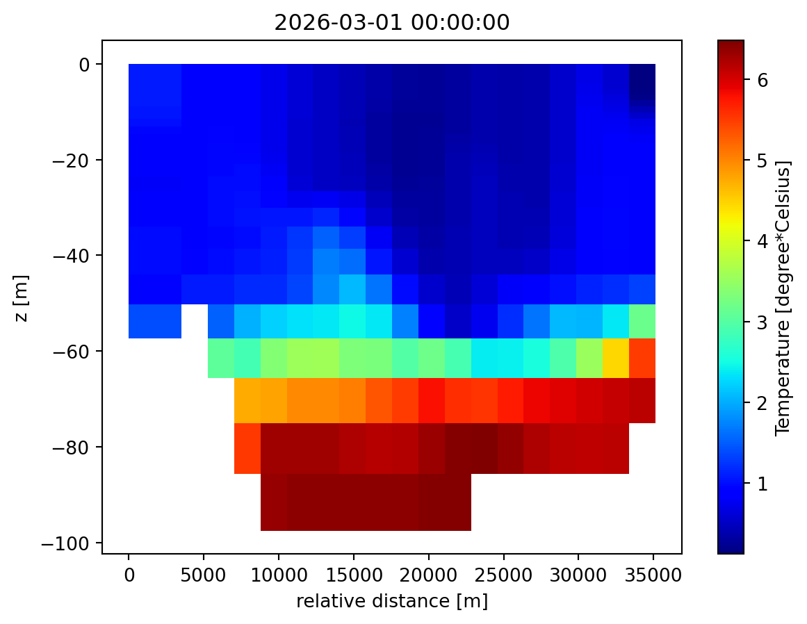
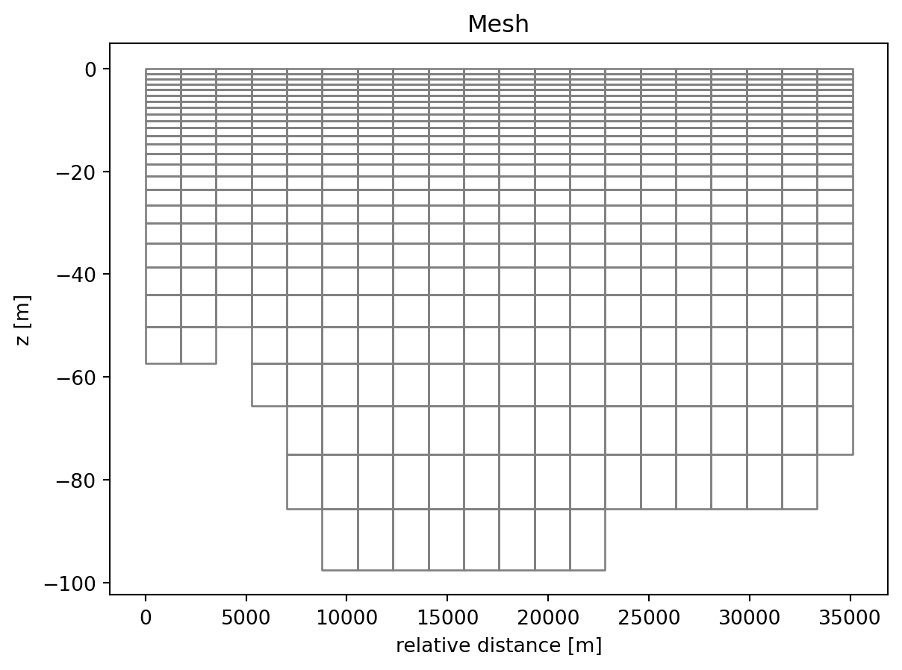

import numpy as np
import xarray as xr
import matplotlib.pyplot as plt
import mikeio
from mikeio.spatial import GeometryFMVerticalProfile
from mikecore.DfsuFile import DfsuFileTypeCMEMS to vertical profile
Convert Copernicus Marine (CMEMS) gridded data to a MIKE dfsu vertical profile.
This example shows how to extract a vertical transect from a Copernicus Marine (CMEMS) NetCDF file and save it as a dfsu vertical profile — an unstructured mesh format commonly used as boundary conditions in MIKE hydrodynamic models.
Setup
Load CMEMS data
This example uses a small Baltic Sea subset downloaded with the Copernicus Marine Toolbox:
ds_cmems = xr.open_dataset("../../data/cmems_mod_bal_phy_anfc_P1D.nc")
ds_cmems<xarray.Dataset> Size: 564kB
Dimensions: (time: 3, depth: 29, latitude: 54, longitude: 15)
Coordinates:
* time (time) datetime64[ns] 24B 2026-03-01 2026-03-02 2026-03-03
* depth (depth) float32 116B 0.5016 1.516 2.548 ... 91.31 103.8 117.6
* latitude (latitude) float32 216B 59.07 59.09 59.11 ... 59.92 59.94 59.96
* longitude (longitude) float32 60B 23.26 23.29 23.32 ... 23.6 23.63 23.65
Data variables:
thetao (time, depth, latitude, longitude) float32 282kB ...
so (time, depth, latitude, longitude) float32 282kB ...
Attributes:
Conventions: CF-1.11
title: CMEMS NEMO daily integrated model fields
institution: Baltic MFC, PU Swedish Meteorological and Hydrological...
source: CMEMS BAL MFC NEMO model output converted to NetCDF
contact: servicedesk.cmems@mercator-ocean.eu
references: https://marine.copernicus.eu/
comment: Data on cropped native product grid. Horizontal veloci...
subset:source: ARCO data downloaded from the Marine Data Store using ...
subset:productId: BALTICSEA_ANALYSISFORECAST_PHY_003_006
subset:datasetId: cmems_mod_bal_phy_anfc_P1D-m_202411
subset:date: 2026-03-15T17:14:04.336ZDefine a transect
Define a transect as evenly-spaced points between two endpoints, using the native grid resolution.
lon_start, lat_start = 23.6, 59.3
lon_end, lat_end = 23.6, 59.6
n_points = 20
transect_lon = np.linspace(lon_start, lon_end, n_points)
transect_lat = np.linspace(lat_start, lat_end, n_points)fig, ax = plt.subplots()
ds_cmems["thetao"].isel(time=0, depth=0).plot(ax=ax)
ax.plot(transect_lon, transect_lat, "k-o", markersize=3, label="Transect")
ax.legend()
ax.set_title("Surface temperature with transect");
Extract data along the transect
Select the nearest grid point for each transect position using xarray.
ds_transect = ds_cmems.sel(
latitude=xr.DataArray(transect_lat, dims="points"),
longitude=xr.DataArray(transect_lon, dims="points"),
method="nearest",
)
depth = ds_cmems.depth.values
time = ds_cmems.time.values
n_times = len(time)
n_depths = len(depth)
ds_transect<xarray.Dataset> Size: 14kB
Dimensions: (time: 3, depth: 29, points: 20)
Coordinates:
* time (time) datetime64[ns] 24B 2026-03-01 2026-03-02 2026-03-03
* depth (depth) float32 116B 0.5016 1.516 2.548 ... 91.31 103.8 117.6
latitude (points) float32 80B 59.31 59.31 59.32 ... 59.57 59.59 59.61
longitude (points) float32 80B 23.6 23.6 23.6 23.6 ... 23.6 23.6 23.6 23.6
Dimensions without coordinates: points
Data variables:
thetao (time, depth, points) float32 7kB ...
so (time, depth, points) float32 7kB ...
Attributes:
Conventions: CF-1.11
title: CMEMS NEMO daily integrated model fields
institution: Baltic MFC, PU Swedish Meteorological and Hydrological...
source: CMEMS BAL MFC NEMO model output converted to NetCDF
contact: servicedesk.cmems@mercator-ocean.eu
references: https://marine.copernicus.eu/
comment: Data on cropped native product grid. Horizontal veloci...
subset:source: ARCO data downloaded from the Marine Data Store using ...
subset:productId: BALTICSEA_ANALYSISFORECAST_PHY_003_006
subset:datasetId: cmems_mod_bal_phy_anfc_P1D-m_202411
subset:date: 2026-03-15T17:14:04.336ZBuild the vertical profile mesh
CMEMS data values are cell-centered — each (depth, point) is an element value. The nodes sit at the boundaries between cells.
Nodes
Compute node positions at the interfaces between depth levels and between horizontal points.
# Vertical interfaces: surface, midpoints between levels, bottom
z_interfaces = np.concatenate(
[[0], (depth[:-1] + depth[1:]) / 2, [depth[-1] + (depth[-1] - depth[-2]) / 2]]
)
# Horizontal interfaces: half-cell before first, midpoints, half-cell after last
half_dlon = (transect_lon[1] - transect_lon[0]) / 2
half_dlat = (transect_lat[1] - transect_lat[0]) / 2
lon_interfaces = np.concatenate(
[[transect_lon[0] - half_dlon], (transect_lon[:-1] + transect_lon[1:]) / 2, [transect_lon[-1] + half_dlon]]
)
lat_interfaces = np.concatenate(
[[transect_lat[0] - half_dlat], (transect_lat[:-1] + transect_lat[1:]) / 2, [transect_lat[-1] + half_dlat]]
)
n_nodes_per_col = n_depths + 1
# Build node coordinates: column-major, bottom-to-top
node_coords = np.column_stack([
np.repeat(lon_interfaces, n_nodes_per_col),
np.repeat(lat_interfaces, n_nodes_per_col),
np.tile(-z_interfaces[::-1], n_points + 1),
])Elements
Each CMEMS cell maps to one element. Skip cells with NaN (below seafloor).
# Seafloor mask: NaN marks cells below the seabed (any variable works, all share the same mask)
mask = ds_transect["so"].isel(time=0).values
# Build full grid of (point, layer) indices, then mask out seafloor
pi_all = np.repeat(np.arange(n_points), n_depths)
li_all = np.tile(np.arange(n_depths), n_points)
di_all = n_depths - 1 - li_all # depth index (deepest first in mesh)
valid = ~np.isnan(mask[di_all, pi_all])
pi_valid, li_valid, di_valid = pi_all[valid], li_all[valid], di_all[valid]
# Node indices for each quad element: [bottom-left, bottom-right, top-right, top-left]
bl = pi_valid * n_nodes_per_col + li_valid
element_table = [
np.array([b, b + n_nodes_per_col, b + n_nodes_per_col + 1, b + 1])
for b in bl
]Geometry
geometry = GeometryFMVerticalProfile(
node_coordinates=node_coords,
element_table=element_table,
projection="LONG/LAT",
# SigmaZ allows variable number of layers per column (bottom-following)
dfsu_type=DfsuFileType.DfsuVerticalProfileSigmaZ,
# n_layers is the max number of layers in any column
n_layers=n_depths,
# n_sigma=1 means only the top layer is guaranteed everywhere;
# deeper layers are z-layers that can be absent in shallow columns
n_sigma=1,
)
geometryFlexible Mesh Geometry: DfsuVerticalProfileSigmaZ
number of nodes: 630
number of elements: 515
number of layers: 29
number of sigma layers: 1
projection: LONG/LATWrite
zn = np.tile(node_coords[:, 2], (n_times, 1)).astype(np.float32)
variables = {
"thetao": mikeio.ItemInfo("Temperature", mikeio.EUMType.Temperature),
"so": mikeio.ItemInfo("Salinity", mikeio.EUMType.Salinity),
}
ds_dfsu = mikeio.Dataset([
mikeio.DataArray(
data=ds_transect[name].values[:, di_valid, pi_valid],
time=time, geometry=geometry, item=item, zn=zn,
)
for name, item in variables.items()
])
ds_dfsu.to_dfs("transect.dfsu")Result
ds_back = mikeio.read("transect.dfsu")
ds_back<mikeio.Dataset>
dims: (time:3, element:515)
time: 2026-03-01 00:00:00 - 2026-03-03 00:00:00 (3 records)
geometry: DfsuVerticalProfileSigmaZ (515 elements, 630 nodes)
items:
0: Temperature <Temperature> (degree Celsius)
1: Salinity <Salinity> (PSU)ds_back["Temperature"].isel(time=0).plot();
ds_back.geometry.plot.mesh();